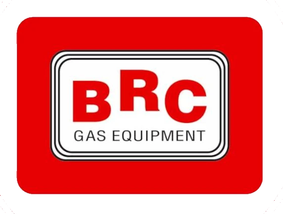
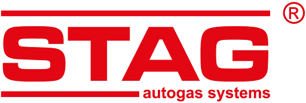

Montaż autogazu krok po kroku
Każdy montaż zaczynamy od rozmowy o sposobie eksploatacji samochodu i rocznym przebiegu - to od tego zależy, jaki system LPG lub CNG będzie najbardziej opłacalny. Sam proces montażu w naszym warsztacie w Bielsku-Białej wygląda następująco:
- Konsultacja i dobór komponentów - analizujemy typ wtrysku, moc silnika i oczekiwania klienta, dobierając reduktor, wtryskiwacze gazowe i sterownik dopasowane do konkretnego modelu.
- Wycena i termin - podajemy dokładny koszt montażu oraz orientacyjny czas trwania prac, tak aby klient mógł zaplanować odbiór samochodu.
- Montaż reduktora, wtryskiwaczy i elektroniki sterującej - komponenty montujemy zgodnie z dokumentacją techniczną Landi Renzo, dbając o estetykę i dostęp serwisowy do podzespołów.
- Montaż zbiornika gazu - w zależności od modelu auta i preferencji klienta montujemy butlę toroidalną w kole zapasowym lub zbiornik cylindryczny w bagażniku.
- Programowanie mapy zapłonu - podczas jazdy testowej ustawiamy parametry pracy silnika na gazie tak, by osiągi i płynność jazdy odpowiadały pracy na benzynie.
- Odbiór i szkolenie z obsługi - klient otrzymuje komplet dokumentów montażowych oraz krótkie wprowadzenie do codziennej obsługi instalacji.
Korzyści z jazdy na LPG
Najczęstszym powodem, dla którego kierowcy w Bielsku-Białej decydują się na montaż autogazu, są niższe koszty eksploatacji - cena litra gazu jest zwykle o połowę niższa od benzyny, a przy większym rocznym przebiegu instalacja potrafi zwrócić się w ciągu kilkunastu miesięcy. Nowoczesne systemy sekwencyjne pozwalają swobodnie przełączać się między benzyną a gazem jednym przyciskiem, bez utraty komfortu jazdy.
LPG to również paliwo czystsze spalinowo niż benzyna - mniejsza ilość osadów w komorze spalania przekłada się na dłuższą żywotność oleju silnikowego i niektórych podzespołów układu wydechowego. W połączeniu z regularnymi przeglądami instalacja LPG pozwala jeździć ekonomicznie przez wiele lat bez utraty osiągów samochodu.
Autoryzowany montaż Landi Renzo Gas Specialist
Status Landi Renzo Gas Specialist zobowiązuje - nasi mechanicy regularnie przechodzą szkolenia techniczne bezpośrednio u producenta i na bieżąco poznają kolejne generacje systemów LPG i CNG. Montaże realizujemy zgodnie z homologacją Landi Renzo Polska, a do napraw i regulacji używamy wyłącznie oryginalnych części, co bezpośrednio przekłada się na trwałość i bezpieczeństwo całej instalacji.
Każdy montaż objęty jest gwarancją producenta - w razie usterki objętej gwarancją klient nie zostaje sam z problemem, a naprawa odbywa się w oparciu o oficjalną dokumentację serwisową Landi Renzo.
Marki systemów LPG, które montujemy
Współpracujemy z uznanymi producentami instalacji gazowych i dobieramy system dopasowany do konkretnego silnika oraz budżetu klienta. Na życzenie montujemy również inne marki niż wymienione poniżej, w tym systemy do silników z wtryskiem bezpośrednim (GDI/TSI/FSI) - o dostępności konkretnego rozwiązania dla Twojego auta powiemy podczas konsultacji.

Landi Renzo - włoski producent systemów LPG i CNG, z którym współpracujemy jako autoryzowany Gas Specialist. Pełna homologacja, oryginalne części i gwarancja producenta na montaż.
Lovato - włoski producent instalacji LPG działający w grupie Landi Renzo, ceniony za precyzyjne sterowniki i dobrą współpracę z silnikami z wtryskiem bezpośrednim.

BRC Gas Equipment - producent reduktorów i wtryskiwaczy gazowych z wieloletnim doświadczeniem, stosowanych zarówno w autach osobowych, jak i dostawczych.

STAG - polski producent elektroniki sterującej instalacji LPG, ceniony za dopracowane oprogramowanie i łatwą diagnostykę systemu.
Instalacja LPG do silników z wtryskiem bezpośrednim (GDI, TSI, FSI)
Silniki z wtryskiem bezpośrednim (GDI, TSI, FSI) podają benzynę pod wysokim ciśnieniem prosto do komory spalania, a nie - jak w klasycznym wtrysku pośrednim - do kolektora dolotowego przed zaworem. Wtryskiwacze w takich silnikach są chłodzone i smarowane samą przepływającą przez nie benzyną, dlatego całkowite przejście na zasilanie gazowe groziłoby ich przegrzaniem i przyspieszonym zużyciem. To dlatego montaż LPG w silnikach GDI, TSI i FSI wymaga innego podejścia niż w silnikach z wtryskiem pośrednim.
Rozwiązaniem jest dotrysk benzyny - część mieszanki, typowo około 10-15%, nadal podawana jest w postaci benzyny, żeby zapewnić wtryskiwaczom odpowiednie chłodzenie i smarowanie, a resztę stanowi gaz. Ten sam parametr znajdziesz w naszym kalkulatorze opłacalności LPG poniżej, gdzie można go samodzielnie dostosować.
Do silników z wtryskiem bezpośrednim stosujemy instalacje LPG piątej generacji, sterujące dotryskiem precyzyjnie dla każdego cylindra osobno. Przed montażem sprawdzamy specyfikację techniczną konkretnego silnika i na tej podstawie dobieramy komponenty - nie ma tu jednego uniwersalnego zestawu pasującego do każdego auta z GDI, TSI czy FSI, dlatego ostateczną konfigurację ustalamy indywidualnie podczas konsultacji w naszym warsztacie w Bielsku-Białej.
Ze względu na konieczność dotrysku benzyny opłacalność takiej instalacji jest realnie niższa niż w silnikach z wtryskiem pośrednim, choć wciąż zauważalna przy większym rocznym przebiegu. Orientacyjne wyliczenia, uwzględniające udział benzyny w dotrysku, znajdziesz w kalkulatorze opłacalności LPG poniżej - ma on dedykowany przełącznik dla silników GDI/TSI/FSI.
Przy tak wymagających silnikach szczególne znaczenie ma autoryzacja producenta instalacji oraz precyzyjnie ustawiona mapa zapłonu - błędy w regulacji mogą prowadzić do nierównej pracy silnika lub przyspieszonego zużycia wtryskiwaczy. Jako autoryzowany warsztat Landi Renzo Gas Specialist dobieramy i programujemy instalację indywidualnie, po konsultacji i sprawdzeniu specyfikacji Twojego silnika.
Kalkulator opłacalności LPG
Sprawdź orientacyjny czas zwrotu instalacji i miesięczne oszczędności - wpisz swój roczny przebieg, spalanie oraz koszt montażu, resztę policzymy automatycznie.
Silniki z wtryskiem bezpośrednim wymagają ciągłego dotrysku niewielkiej ilości benzyny chłodzącej wtryskiwacze - typowo ok. 10-15% mieszanki - co nieco obniża realne oszczędności względem silników z wtryskiem pośrednim.
Wyliczenia orientacyjne - domyślnie zakładają ok. 15% wyższe zużycie paliwa na gazie niż na benzynie (niższa wartość opałowa LPG); wartość tę możesz dowolnie zmienić. Rzeczywiste oszczędności zależą od stylu jazdy, modelu samochodu i aktualnych cen paliw.
Przeglądy i serwis instalacji LPG
Przegląd instalacji LPG zalecamy wykonywać co około 10 000 km lub raz w roku - w zależności od tego, co nastąpi wcześniej. Podczas przeglądu sprawdzamy szczelność układu, stan filtrów i przewodów oraz parametry pracy reduktora, a w razie potrzeby korygujemy mapę zapłonu. Regularny serwis to najlepszy sposób, żeby instalacja pracowała bezpiecznie i ekonomicznie przez cały rok.
Dlaczego warto wybrać Auto Diag
Montażem i serwisem instalacji LPG zajmujemy się w Bielsku-Białej od wielu lat, a status Landi Renzo Gas Specialist regularnie potwierdzamy kolejnymi szkoleniami u producenta. Każdy zestaw dobieramy indywidualnie do silnika, zamiast montować uniwersalne rozwiązania "pod klucz" - dzięki temu instalacja pracuje płynnie, a auto zachowuje pełne osiągi zarówno na gazie, jak i na benzynie. Klienci wracają do nas nie tylko na montaż, ale i na coroczne przeglądy, co widać w opiniach zebranych na naszym profilu w Google.
Obszar działania
Montaż i serwis instalacji LPG realizujemy dla klientów z Bielska-Białej i okolic: